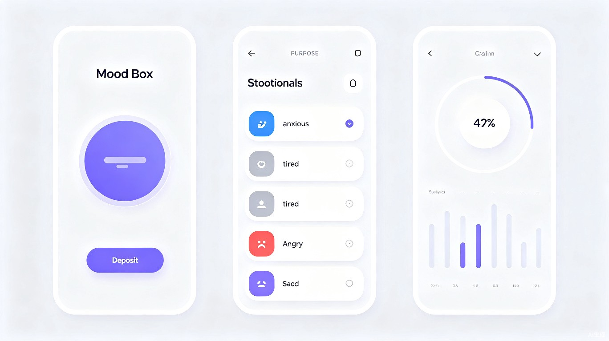

产品概述
情绪暂存器是一款轻量化的情绪管理工具，核心理念源自心理学中的「情绪调节策略」——允许用户将当下的负面情绪和待办压力暂时「封存」，而非强迫自己立即消化或解决。
现代生活节奏快，信息过载、工作琐事、社交压力层层叠加，人们常常陷入「必须立刻处理一切」的焦虑中。情绪暂存器提供了一个安全的数字容器，让用户可以：
- 快速记录当下的情绪状态和触发原因
- 将暂时无法处理的琐事和压力「打包封存」
- 在合适的时间、以合适的心态重新打开处理
- 通过数据洞察自己的情绪模式和压力来源
核心功能设计
1. 一键存情绪
打开应用，选择一个情绪标签，写下当下的感受，点击「放入盒子」——整个过程不超过30秒。没有复杂的表单，没有强制的分析，只需要承认自己的情绪存在。
2. 智能暂存箱
存入的情绪和事项会被放入「暂存箱」。每个条目包含：
- 情绪标签：快速分类，便于后续统计
- 时间戳：记录存入时刻，支持时间线回顾
- 文字描述：自由书写，不限字数
- 压力等级：1-5星直观标注
- 建议处理时间：可设置提醒，避免无限拖延
3. 定时开启提醒
用户可以为每个暂存条目设置「开启时间」。到了设定时间，应用会发送温柔的推送通知："你有一个情绪包裹到了开启时间，准备好面对它了吗？"
如果用户仍感觉没准备好，可以选择「再暂存一段时间」——没有惩罚，没有催促，完全尊重用户的心理节奏。
4. 情绪数据洞察
应用会自动生成个人情绪报告，帮助用户了解：
情绪频率分布
哪类情绪出现最多？焦虑、疲惫还是愤怒？
高压时段识别
一周中哪些时间段最容易感到压力？
处理完成率
有多少暂存事项最终被成功处理？
情绪触发源
常见关键词分析，找出压力根源
5. 安心模式
考虑到情绪内容的私密性，应用提供：
- 本地优先存储：所有数据默认保存在设备本地
- 可选云同步：端到端加密，连开发者也无法查看
- 应用锁：Face ID / 指纹 / 密码三重保护
- 紧急隐藏：摇一摇或特定手势快速隐藏内容
用户旅程
从情绪涌上心头，到重获内心平静，只需四步。
感知
觉察到自己情绪不佳，有很多事压在心头
存入
打开应用，选择情绪标签，简单写下原因
释放
点击「放入盒子」，深呼吸，暂时放下
处理
在合适的时间重新打开，理性面对和解决
界面设计概念
整体视觉风格追求「温柔、安静、有安全感」——像是一个随时可以依靠的数字避风港。

设计原则
柔和配色
低饱和度暖色调为主，避免刺激视觉，营造安心氛围
微交互动效
存入时的「吸入」动画、开启时的「释放」动画，强化心理暗示
深色模式
支持自动切换的深色主题，夜间使用不刺眼
无衬线字体
清晰易读的现代字体，搭配手写体点缀，增加人文温度
技术实现方案
前端技术栈
| 层级 | 技术选型 | 说明 |
|---|---|---|
| 跨平台框架 | Flutter / React Native | 一套代码覆盖 iOS + Android |
| 状态管理 | Riverpod / Zustand | 轻量、响应式 |
| 本地存储 | SQLite / Hive | 结构化存储情绪条目 |
| 图表可视化 | FL Chart / ECharts | 情绪数据图表渲染 |
| 生物识别 | Local Auth API | Face ID / 指纹解锁 |
数据安全
- 本地加密：SQLite 数据库使用 SQLCipher 加密存储
- 端到端加密：云同步采用 AES-256-GCM + 用户自定义密钥
- 零知识架构：服务端仅存储加密后的数据块，无法解密
- 隐私合规：符合 GDPR 和中国个人信息保护法要求
差异化亮点
与市面上现有的冥想、日记、待办类应用相比，情绪暂存器的独特价值在于：
「暂存」而非「解决」
不强迫用户立刻面对问题，而是提供心理缓冲地带，降低使用门槛
情绪 + 事务双维度
同时记录「感受」和「具体事项」，既有情绪出口，又有行动抓手
仪式感设计
存入和开启的动画、音效、触觉反馈，强化「放下」和「面对」的心理暗示
极致隐私保护
本地优先 + 端到端加密，让用户敢于记录真实的、脆弱的自己
商业模式
| 层级 | 功能 | 定价策略 |
|---|---|---|
| 免费版 | 基础情绪存入、本地存储、5条暂存上限、基础统计 | 永久免费 |
| Pro 版 | 无限暂存、云同步、高级洞察报告、自定义标签、深色模式 | ¥12/月 或 ¥68/年 |
| 企业版 | 团队情绪健康看板（匿名聚合）、EAP 集成、管理员后台 | 按人头订阅，联系销售 |
TRAE 创造力大赛参赛亮点
情绪暂存器不仅是一个工具，更是一种对现代人心理健康的温柔关怀。
- 创新理念：首创「情绪暂存」概念，填补了「即时情绪急救」市场的空白
- 技术实现：结合本地 AI 情绪分析（可选），在用户同意的前提下提供智能建议
- 社会价值：关注心理健康这一日益重要的社会议题，具有广泛的公益属性
- 设计美学：将心理学原理融入产品设计，每一个交互都经过情绪友好性考量
- 可扩展性：从个人工具可自然延伸至企业 EAP、心理咨询辅助平台
未来规划
AI 情绪助手
基于本地大模型，在用户开启暂存条目时提供温和的引导和建议
匿名社区
可选的匿名分享功能，让用户知道「我不是一个人在战斗」
专业对接
与心理咨询平台合作，为持续高压用户提供专业转介通道
可穿戴集成
接入 Apple Watch / 小米手环，通过心率变异性自动识别高压时刻